Overview
In part A, I used a pretrained text-to-image flow model (PixNerd-XXL-P16-T2I, 512×512, run in float32 on a Colab T4) without training it. A flow model learns the velocity field which moves points along a straight line from the pure noise sample \(\epsilon\) at \(t=0\) to the clean image \(x_1\) at \(t=1\). All my results use seed 180, Euler step size \(h = 0.02\), and CFG scale \(w = 7\) unless I stated otherwise. My test image for Section 1 was the Nyan Cat.
1.1 Constructing Noisy Training Inputs
A noisy training input at time \(t\) can be interpreted as a linear interpolation between Gaussian noise and the clean image. At \(t=0\) it is pure noise and at \(t=1\) it is the clean image, so a larger \(t\) means a cleaner input.
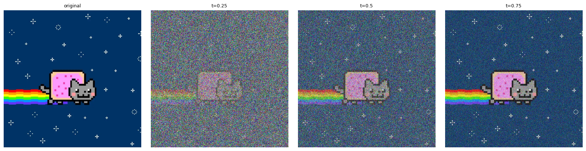
1.2 Classical Denoising
For a baseline measure, I tried to remove the noise using a Gaussian blur. To do so, I first divided by \(t\) to undo the brightness scaling of the image, then I swept values of \(\sigma \in \{1, 2, 4, 8, 16\}\) and keep the blur with the lowest MSE against the original. The noisier inputs needed a much larger blur (\(\sigma = 8\) at \(t=0.25\) vs. \(\sigma = 1\) at \(t=0.75\)), and that blur also destroyed the sharp pixel-art edges and the stars.
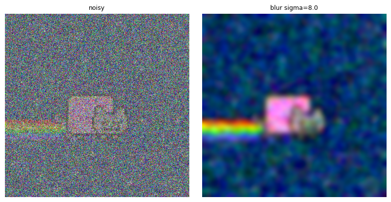
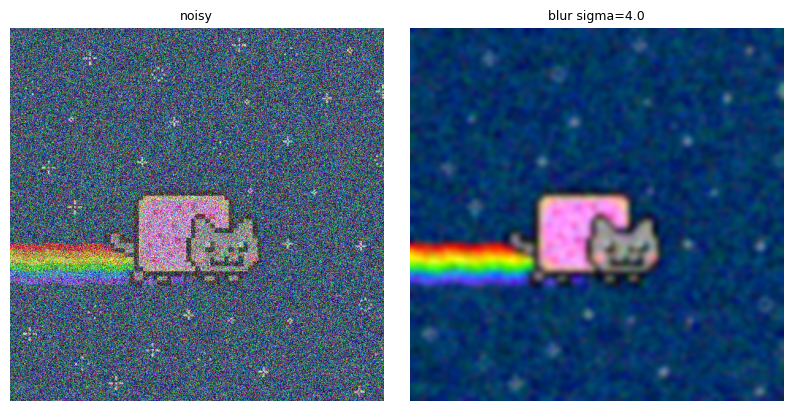
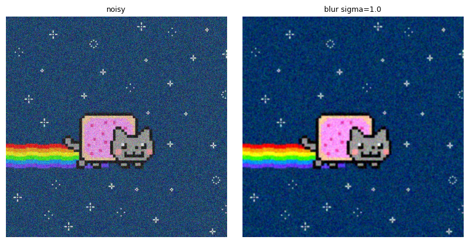
1.3 One-Step Denoising
The model predicts the velocity \(v_\theta(x_t, t, c)\) that points from the noise toward the clean image. Since this path is a straight line, we can calculate all the way to \(t=1\) in a single step. The conditioning \(c\) is the prompt "a high quality photo".
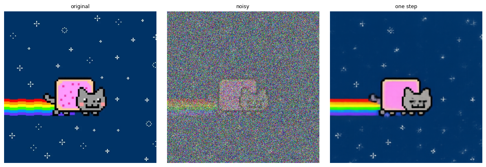
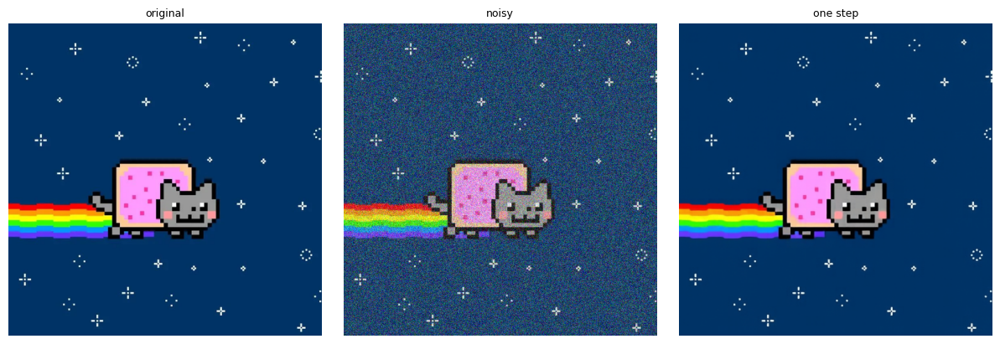
Comparison with Gaussian blur
Using just one step of the flow model is a far better process than any Gaussian blur. Even at \(t = 0.25\), where the cat is barely visible, it is able to recover sharp edges, the correct colors, and the rainbow. However, it gets the details wrong: the stars and the sprinkles on the Pop-Tart are smoothed away or replaced with blurrier versions. This may be because a single step predicts something close to the average of all clean images consistent with the noisy input.
1.4 Visualizing Velocity
Here I compare the update the model would take to reach \(t=1\), \((1-t)\hat v\), with the true update \((1-t)v_{\text{gt}}\), where \(v_{\text{gt}} = x_1 - \epsilon\). The updates are shown in signed RGB (gray = 0) on a range shared by all three timesteps. The error map is the per-pixel RMS of the difference over the RGB channels, also on one shared color scale.
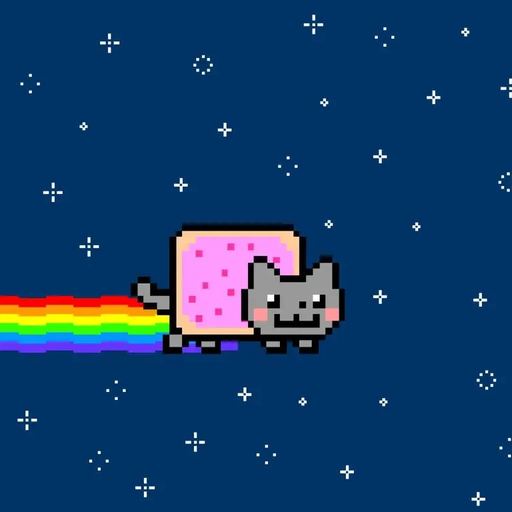
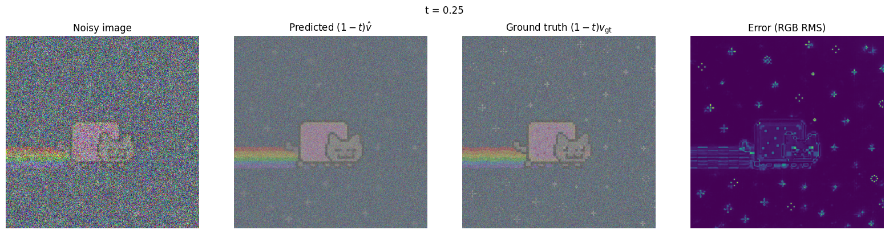
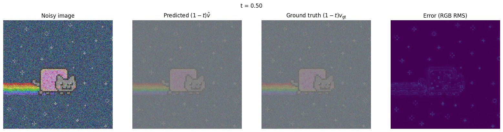
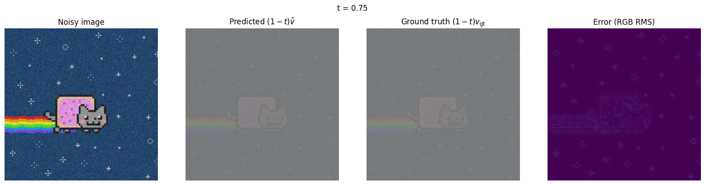
Observations
The updates for predicted and ground-truth look almost the same at each timestep. However, the error is concentrated on edges and smaller details. For example, the outlines of the cat, the rainbow bands, and the stars. Furthermore, flat regions such as the background have almost no error. The error is largest at \(t = 0.25\), where there is the least signal to go on, and shrinks as \(t\) increases.
1.5 Iterative Denoising with Euler Sampling
Rather than going straight to \(t=1\), the Euler sampling process takes many small steps along the velocity field and re-evaluates the model at each one. Starting from the noisy image at \(t = 0.50\) with \(h = 0.02\) takes 25 updates. Below are the initial state, every fifth update and the final image.
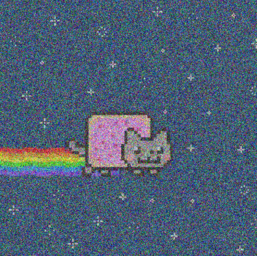
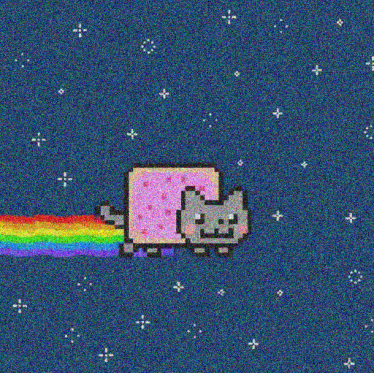
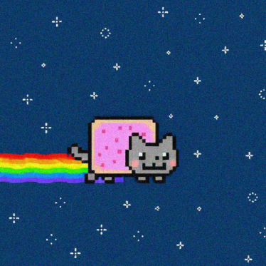
Comparison (same noisy input at t = 0.50)
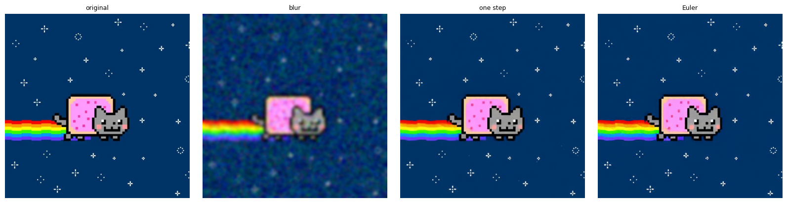
Observations
The Gaussian blur is the clear worst of the three. It is the most blurry and still has a lot of noise. One-step denoising is close to original, but the stars come out a little soft and some small details are missing. Finally, iterative Euler sampling is almost identical to the original, with the sharp stars and Pop-Tart sprinkles. This is because each small step lets the model correct its earlier guesses as the image gets cleaner.
1.6 Generating Images from Noise
Starting Euler sampling from pure noise at \(t = 0\) generates images from scratch. These are five samples (seeds 180–184) for the prompt "a high quality photo", without classifier-free guidance.
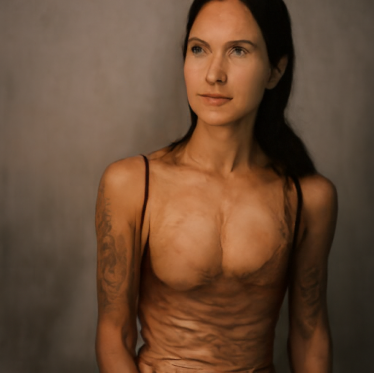
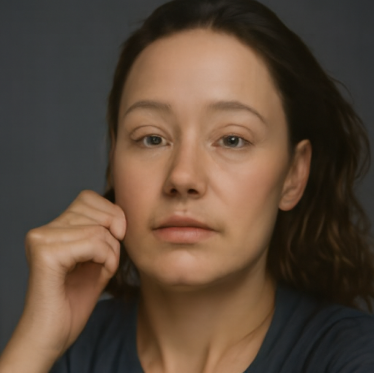
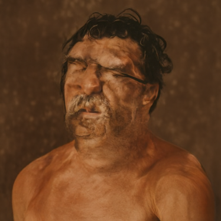
"a high quality photo", no CFG, seeds 180–184
Observations
Each of the five samples is a portrait of a person with a plain background. This happens even without the prompt mentioning people. This seems to suggest that the training data paired "high quality photo" with professional portraits, causing the generic prompt to fall back to that reference. Furthermore, these unguided samples have some obvious problems, with the faces in seeds 180 and 183 appearing smeared, and the anatomy and skin textures looking wrong.
2.1 Classifier-Free Guidance (CFG)
CFG runs the model twice per step, once with the prompt (\(v_c\)) and once with an empty prompt (\(v_u\)), then pushes the velocity further in the direction the prompt adds:
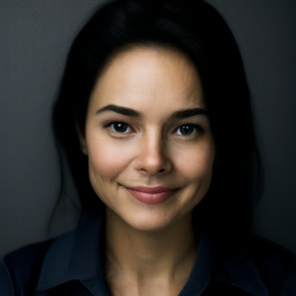
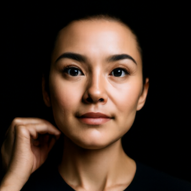
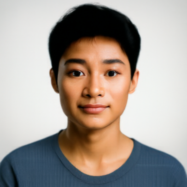
"a high quality photo", \(w = 7\), same initial noise as 1.6 (seeds 180–184)
Comparison with 1.6
After using the same starting noise, CFG gives a much cleaner image with every face remaining intact. I can see that some of the overall structure carries over from the noise: as seed 182 still has the hand raised to their cheek. The cost for this output improvement is diversity. This is because CFG samples are more uniform (centered, front-facing headshots, plain backgrounds), which is the usual trade-off of variety for fidelity to the prompt.
3.1 Image-to-Image Editing
To edit an image here, I add noise to it with interpolate at a starting time \(t_{\text{start}}\), then run the CFG Euler sampling from there with the prompt "a high quality photo". A small \(t_{\text{start}}\) leaves almost nothing of the original, so the model makes up a new image. A large \(t_{\text{start}}\) keeps the original mostly intact. Starting times: \(t_{\text{start}} \in \{0.02, 0.04, 0.06, 0.10, 0.14, 0.25, 0.50\}\).
Campanile

My test image 1: Spider-Man
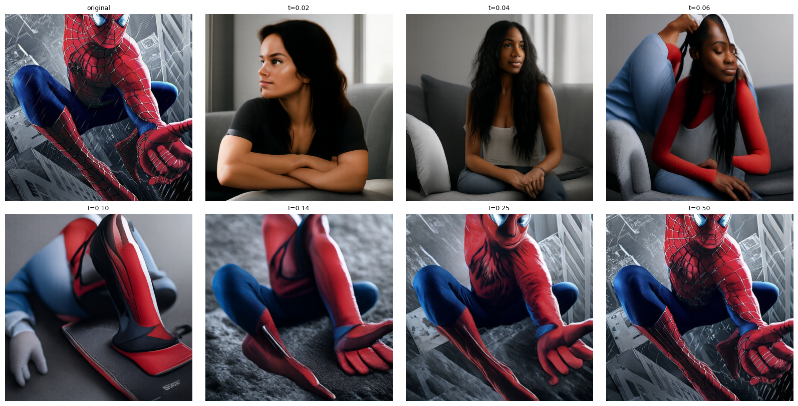
My test image 2: Taj Mahal
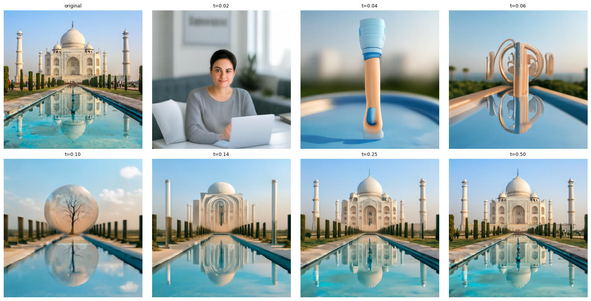
Observations
At \(t_{\text{start}} \le 0.04\), the result shares only coarse color and layout with the input. The Spider-Man image begins turning into a portrait of a woman on a gray couch, which is the "high quality photo means portrait" bias from 1.6. Around \(0.06\)–\(0.14\) the composition settles in: the Campanile becomes a plain white tower with the correct sky and trees, and the Taj Mahal's reflecting pool appears before the building does. By \(0.25\) the edits are very recognizable, as they are now slightly simplified versions of the originals, and \(0.50\) is close to the image reconstruction.
Editing a web image and hand-drawn images
The same procedure was then applied to non-photographic inputs: one image from the web (Perry the Platypus) and two of my own drawings. Here you can see that the low starting times turn the cartoons and sketches into realistic photos, and the higher starting times keep the line art.
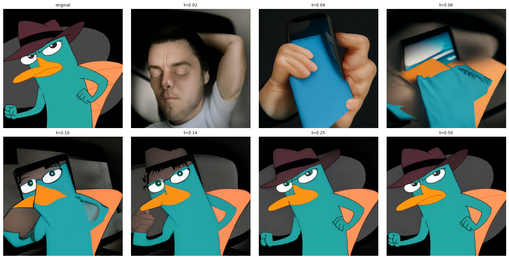
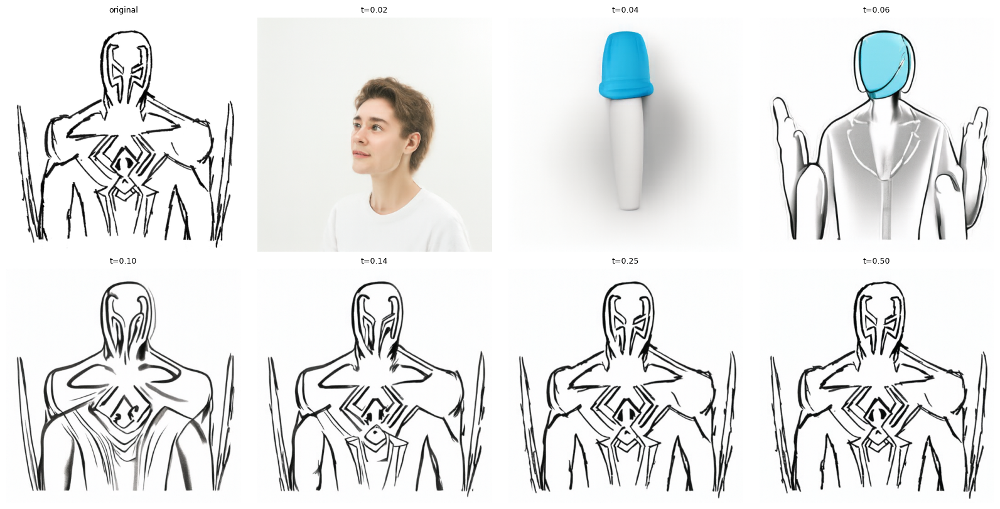
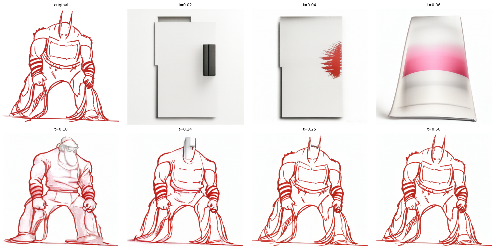
Observations
Perry at \(t_{\text{start}} = 0.10\)–\(0.14\) is my favorite: this is because the model keeps his teal body, orange beak and pose but gives him a human face with glasses. The drawings show the projection onto the image manifold clearly. At \(0.06\)–\(0.10\) the sketches become shaded 3D renderings.
3.2 Text-Guided Image Editing
This is the same procedure used as in 3.1, but now the prompt describes the edit that I want. The noisy original constrains layout and color while the prompt changes the content. Starting times are the same as in 3.1.
Campanile — "a photograph of a camera on textbooks"
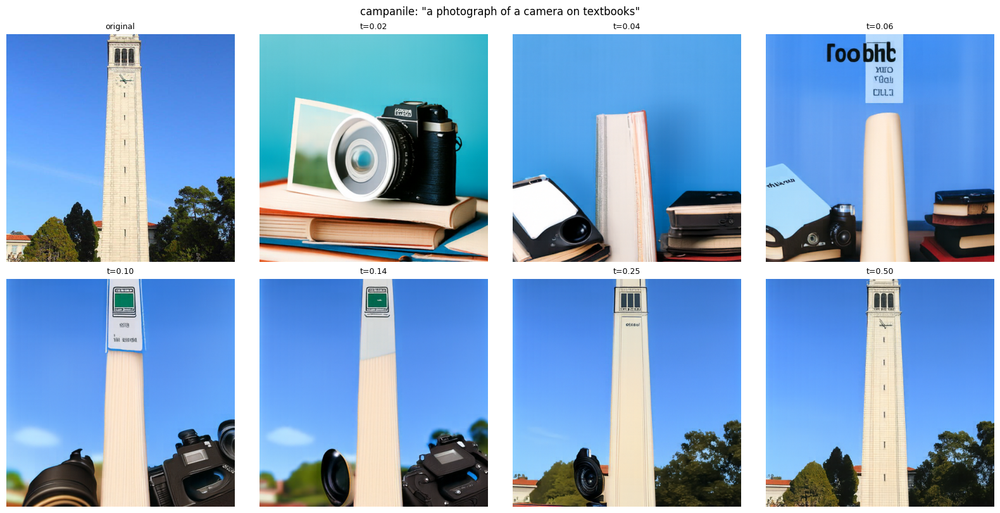
Spider-Man — "a photograph of a man wearing two hats"
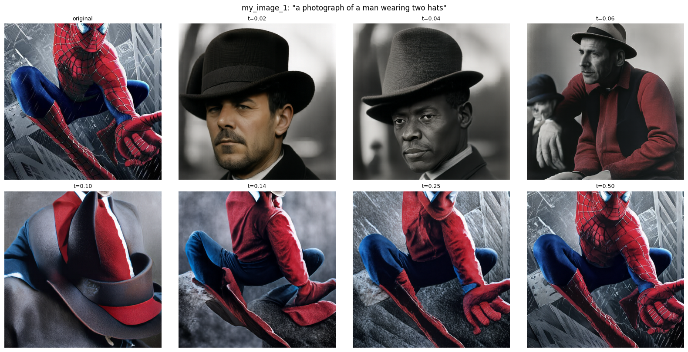
Taj Mahal — "a photograph of a dog in a tree"
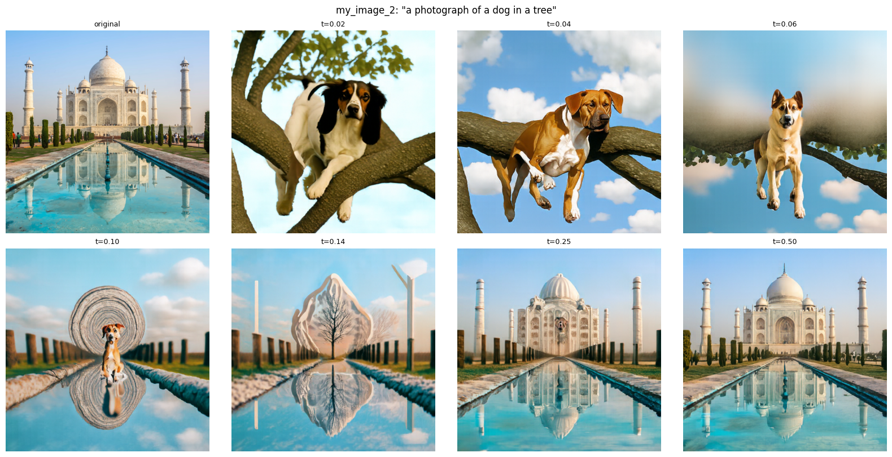
Observations
The interesting results for this process lie in the middle range. This is where the prompt and the image start to compromise. At \(t_{\text{start}} = 0.10\)–\(0.14\) the Campanile becomes a giant book spine with cameras at its base. At \(0.06\) Spider-Man becomes a man in a red jacket, and at \(0.10\) a red-and-blue fedora. At \(0.10\) the dog sits in the middle of the Taj Mahal's reflecting pool, and at \(0.25\) it is a faint face on the dome. By \(t_{\text{start}} = 0.50\) the original wins every time.
3.3 Visual Anagrams
A visual anagram looks like one prompt upright and another when rotated 180°. At every Euler step I compute the CFG velocity for prompt 1 on \(x_t\), and the CFG velocity for prompt 2 on the rotated \(x_t\), which I rotate back. I then average the two:
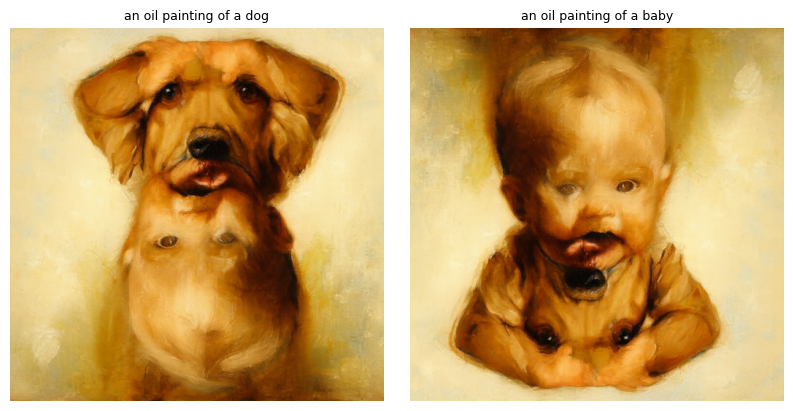
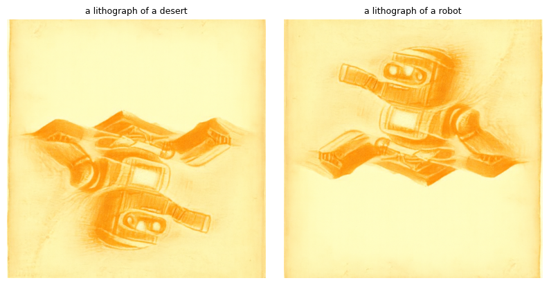
3.4 Hybrid Images
This is the same Project 2 hybrid image idea applied here. At every step, I low-pass filter the CFG velocity for the "distant" prompt and high-pass filter the velocity for the "close" prompt, then add them. I used a Gaussian with \(\sigma = 16\) (kernel 265 at 512×512). Up close you see the high frequencies, and from far away (or shrunk down) only the low frequencies are left.
Hybrid 1 — close: "a lithograph of a baby", distant: "a lithograph of a bear"
Hybrid 2 — close: "a lithograph of a forest", distant: "a lithograph of a flame"
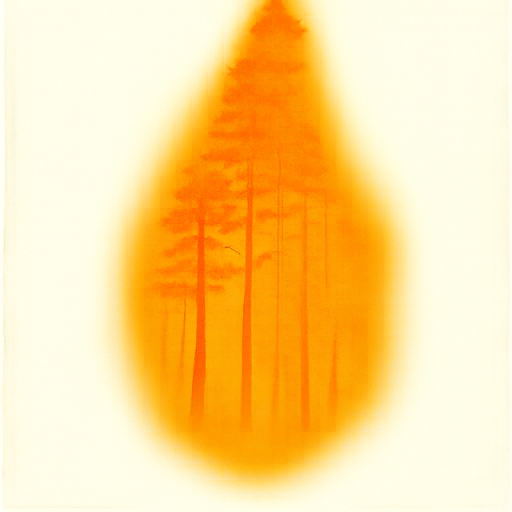
Observations
Up close, the first hybrid is a baby in a hooded coat, and the dark rounded hood and body become a bear's silhouette when shrunk or seen from a distance. The second hybrid shows this strategy best as the overall teardrop shape and the yellow-to-orange gradient are a flame, while the vertical trunks and branches inside it are a forest you only see up close.
1.1 Implementing the UNet
In Part B of the project, I train my own models on MNIST (28×28 grayscale digits in \([0, 1]\)). The foundation is a small UNet with hidden width \(D\). It is built from Conv (3×3 conv → BatchNorm → GELU), DownConv (stride-2 conv), UpConv (4×4 stride-2 transposed conv), Flatten (7×7 average pool to a 1×1 bottleneck) and Unflatten. The encoder goes 28×28 → 14×14 → 7×7 → 1×1, the decoder mirrors it, and skip connections concatenate each encoder feature map onto the matching decoder stage.
1.2 Using the UNet to Train a Denoiser
In the first step, the UNet is trained as a one-step denoiser \(D_\theta\) which maps a noisy digit \(z\) back to the clean digit \(x\) using an L2 loss. The training pairs are made by adding Gaussian noise:
Noising process
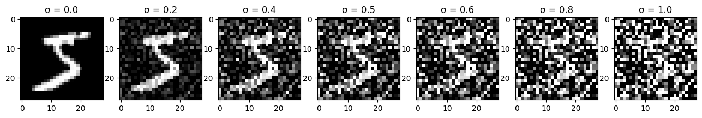
1.2.1 Training
Setup: \(\sigma = 0.5\), UNet with \(D = 128\), batch size 256, Adam with learning rate \(10^{-4}\), 5 epochs (≈1,175 iterations). Noise is re-sampled every time a batch is drawn: the model never sees the same noisy image twice.
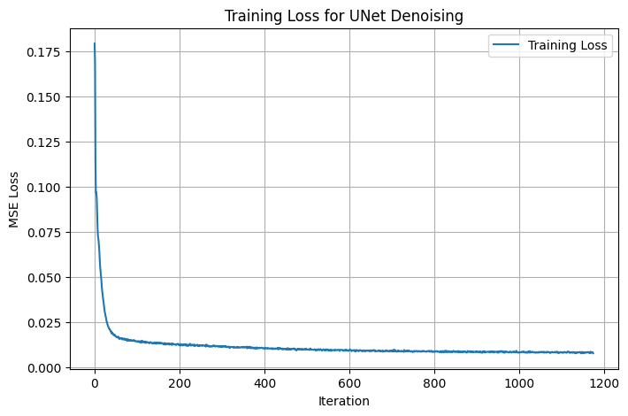
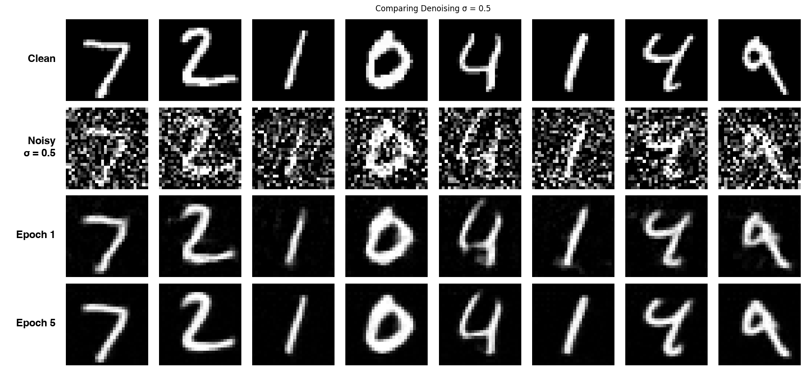
Observations
The loss drops significantly within the first 50 iterations and then improves from there slowly. After one epoch you can see that the digits are already readable but blotchy, with leftover noise near the strokes (the 4 and 9). After five epochs the strokes are clean and smooth. Although they are a little blurrier than the originals, which is expected from an MSE objective.
1.2.2 Out-of-Distribution Testing
The denoiser was only trained at \(\sigma = 0.5\). Here the same model is run on test digits noised at other levels.
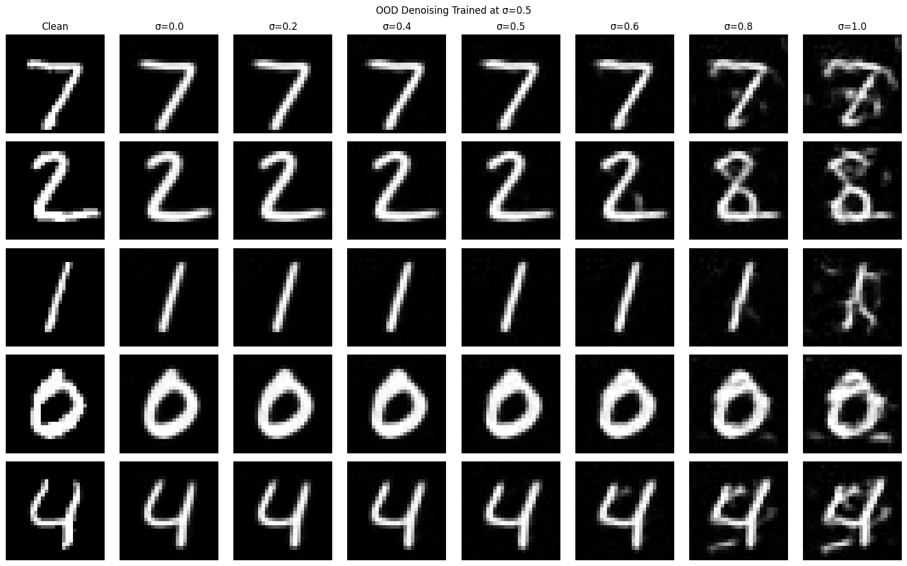
Observations
The model generalizes well to less noise (\(\sigma \le 0.5\)) and still does well at \(\sigma = 0.6\). It starts to fall apart past its training level, as at \(\sigma = 0.8\) and \(1.0\) it creates strokes that aren't there: the 2 turns into an 8, the 1 grows extra lines, and the 4 picks up extra pieces. With more noise than it was trained on, this may be the model reading some of the noise as extra digit strokes.
1.2.3 Denoising Pure Noise
To try generation, I trained a fresh \(D = 128\) UNet with the same settings, but the input is pure Gaussian noise \(z = \epsilon\) with no information about the target digit.
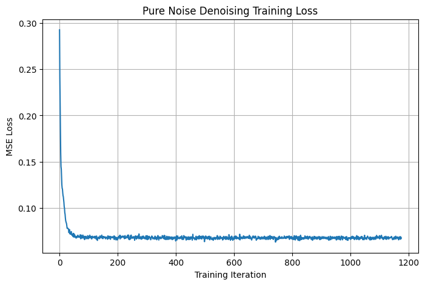
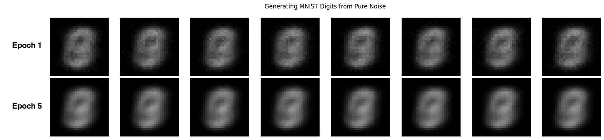
Patterns and why they happen
Every output is essentially the same image regardless of the input noise. It is a blurry, centered blob that looks like every digit drawn on top of each other. You can attempt to make out the 0 and the middle stroke of a 3 or 8. Past epoch 5, the blob is seen to be smoother and more uniform across inputs.
The reason for this is the MSE loss within this process. Since the input noise is independent of the target digit, the model cannot tell which digit to output. Then the output that minimizes the expected squared error \(\mathbb{E}\lVert D_\theta(\epsilon) - x\rVert^2\) is now the mean of the training set, \(\mathbb{E}[x]\), the pixel-wise average of all training digits. This causes the loss to plateau at the variance of the data around that mean. This is the reason why a one-step model can't generate. It is because it needs some signal about the target, which motivates the iterative flow-matching approach below.
2.1 Adding Time Conditioning to UNet
Flow matching learns a velocity field along the straight-line path from noise \(x_0 \sim \mathcal{N}(0, I)\) to a clean image \(x_1\):
The UNet now also takes the time \(t\) as input. A scalar \(t\) goes through two FCBlocks (Linear → GELU) to produce \(t_1 \in \mathbb{R}^{2D}\) and \(t_2 \in \mathbb{R}^{D}\), which scale the decoder feature maps channel-wise: unflatten = unflatten * t1 and up1 = up1 * t2.
2.2 Training the UNet
Each iteration samples a batch of digits \(x_1\), noise \(x_0\) and a random \(t \sim U[0,1]\) per image, builds \(x_t\), and regresses the predicted velocity onto the true one:
Setup: \(D = 64\), batch size 64, Adam with initial learning rate \(10^{-2}\), exponential LR decay with \(\gamma = 0.1^{1/10}\) (stepped once per epoch, so the learning rate ends at \(10^{-3}\)), 10 epochs (≈9,380 iterations).
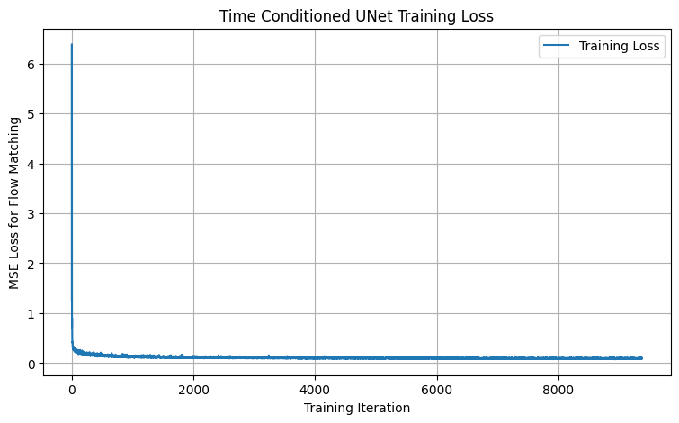
2.3 Sampling from the UNet
To sample, I start from pure noise at \(t = 0\) and integrate the learned velocity with 50 Euler steps (\(x_{t + \Delta t} = x_t + \Delta t\, u_\theta(x_t, t)\), \(\Delta t = 1/50\)) until \(t = 1\). Each row uses the same starting noise (seed 42), so the columns are directly comparable across epochs.
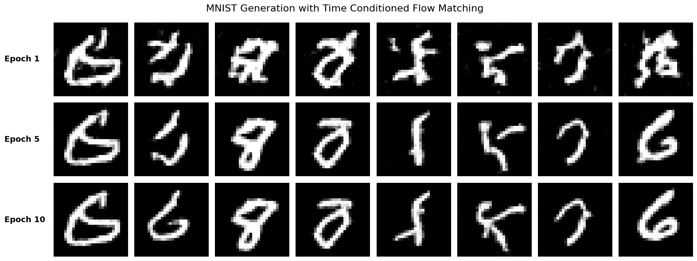
Observations
After epoch 1 you can see that the samples are thick scribbles with a pattern similar to the right stroke but with no clear digits. Then, by epoch 5, several digits become recognizable (8, 7, 6), and by epoch 10 the strokes are cleaner and more connected (a 6 forms in column 2). Without class information the model is still able to make some strange shapes that fall between buckets of digits (columns 1, 5, 6).
2.4 Adding Class-Conditioning to UNet
To control which digit is generated, the UNet takes a one-hot class vector \(c \in \{0,1\}^{10}\). It passes through its own pair of FCBlocks to produce \(c_1, c_2\). Class embeddings then scale the features and time embeddings shift them: unflatten = c1 * unflatten + t1 and up1 = c2 * up1 + t2. Finally, during training, \(c\) is zeroed out with probability \(p_{\text{uncond}} = 0.1\), so the same network also learns the unconditional velocity. That lets me use classifier-free guidance when sampling:
2.5 Training the UNet
Setup: \(D = 64\), batch size 64, \(p_{\text{uncond}} = 0.1\), Adam with initial learning rate \(10^{-2}\) and exponential decay \(\gamma = 0.1^{1/10}\) (stepped once per epoch, ending at \(10^{-3}\)), 10 epochs (≈9,380 iterations). Checkpoints are saved after epochs 1, 5 and 10. The plots also show the no-scheduler run described in 2.6.
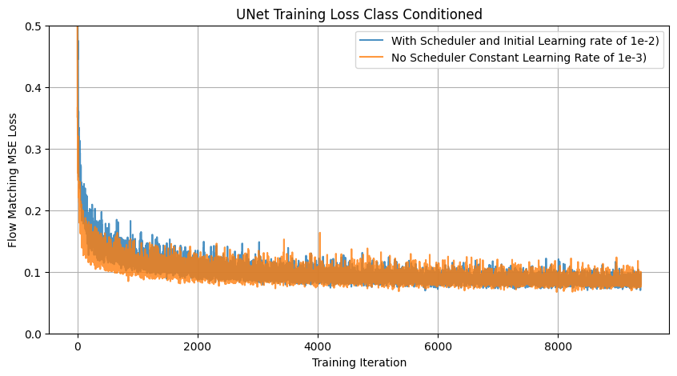
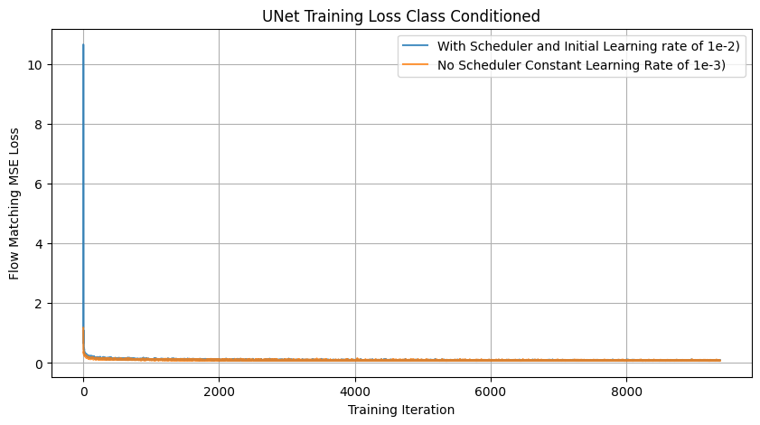
Average loss per epoch
| Epoch | 1 | 2 | 3 | 4 | 5 | 6 | 7 | 8 | 9 | 10 |
|---|---|---|---|---|---|---|---|---|---|---|
| With scheduler (LR \(10^{-2} \to 10^{-3}\)) | 0.1741 | 0.1140 | 0.1021 | 0.0965 | 0.0931 | 0.0906 | 0.0884 | 0.0876 | 0.0860 | 0.0850 |
| No scheduler (LR \(10^{-3}\)) | 0.1360 | 0.1050 | 0.1001 | 0.0961 | 0.0927 | 0.0914 | 0.0896 | 0.0879 | 0.0871 | 0.0860 |
Class conditioning reaches a lower loss than the time-only model (0.085 vs. 0.093 after 10 epochs), because knowing the digit removes a lot of uncertainty about which way the flow should go.
2.6 Sampling from the UNet
The sampling process starts from pure noise and runs 300 Euler steps with classifier-free guidance \(\gamma = 5\). Each grid here shows four samples of every digit 0–9, and every grid uses the same starting noise (seed 42), so that we can compare the same cell across epochs.
With exponential LR scheduler
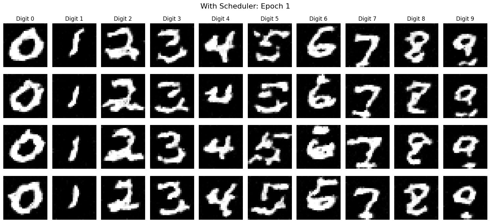
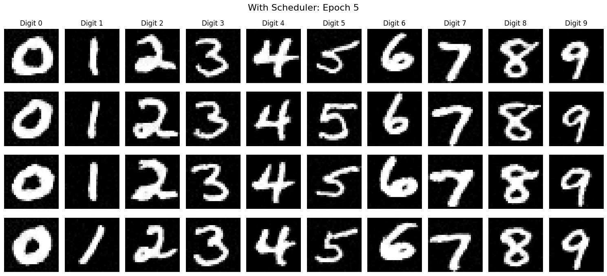
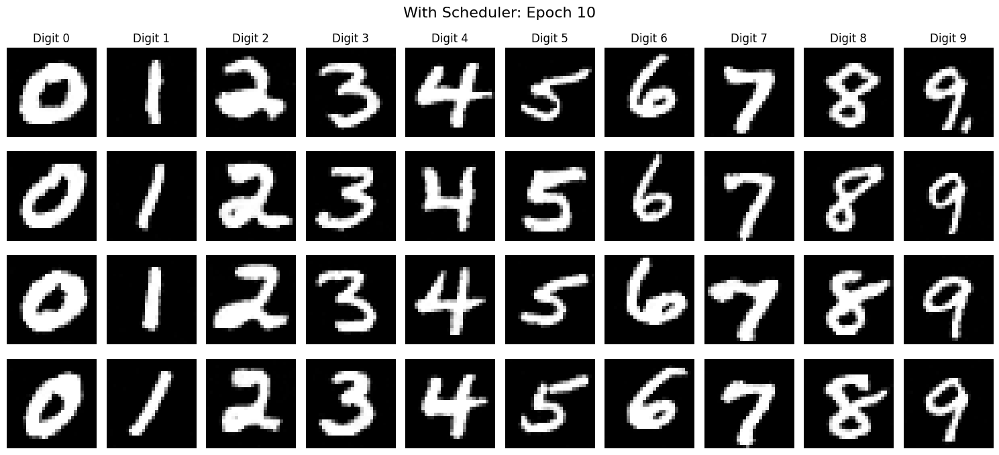
Observations
As we can see, even after one epoch, every column is the requested digit, displaying the main benefit of using class conditioning. However, far from perfect as the strokes in epoch 1 are thick and blotchy, with stray marks (under the 9s) and some broken shapes like the 5s. Then, by epoch 5 almost every sample becomes a clean, well-formed digit, and epoch 10 smooths the remaining rough edges.
Removing the learning-rate scheduler
Then, I trained a second, independent model without the exponential scheduler. I did this because the scheduler decays the learning rate from \(10^{-2}\) to \(10^{-3}\). A large learning rate early on gives fast progress, and the decay lets the model settle into a good minimum instead of moving around it. A constant \(10^{-2}\) would keep taking large, noisy steps late in training. To compensate for this, I used a constant learning rate of \(10^{-3}\), the value the scheduler ends at, for all 10 epochs. Everything else (architecture, batch size, \(p_{\text{uncond}}\), sampling seed) stays the same.
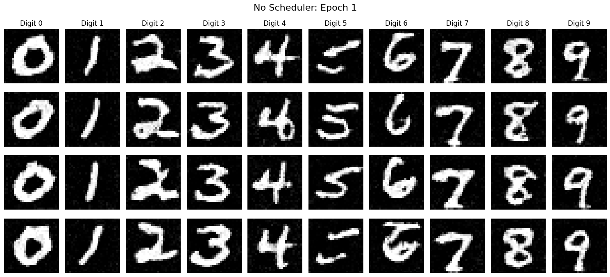
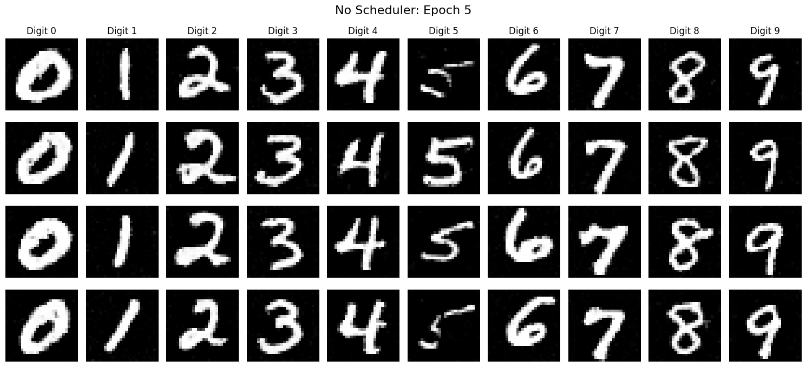
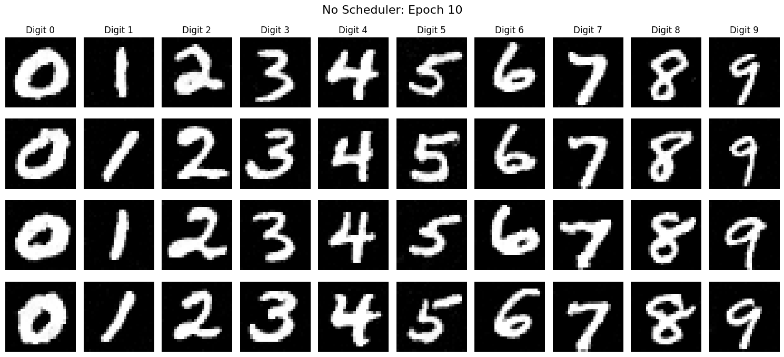
Comparison
Performance in the model was maintained without the scheduler. With a smaller constant learning rate, the training is more stable at the start; the loss has no huge first-iteration spike, and the epoch 1 loss is lower (0.136 vs. 0.174). Furthermore, the epoch 1 samples are also noticeably cleaner, with the 3s, 7s, 8s, and 9s already well formed. These two runs are almost tied for epochs 3–5. Then, from epoch 6 onwards, the scheduled run pulls slightly ahead and finishes at 0.0850 vs. 0.0860, because its decaying learning rate lets it settle at a minimum more precisely. Finally, by epoch 10 the two sets of samples can be seen as visually indistinguishable in quality, and both produce clean digits in every cell.